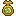
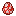
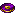
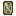
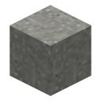
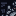
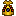

All of these are in their own Deus Chrono Machina tab, and every one uses the spiky challenge frame and plays the challenge sound. Hidden ones don't show in the tab until you get them.
-
Deus Chrono MachinaGetting started
Acquire a Timeclock Gear as the first step to crafting Chronosapien DNA.
Pick up a Timeclock Gear. It opens the tab.
-
Galvan PrecisionGetting started
Acquire a Galvan Compass to navigate the fragments.
Get a Galvan Compass.

Time RebornGetting started
Hold the device capable of restoring a timeline.
Get a Time Reborn Device from a mob killed with a Time Reborn weapon.
-
Genetic ChronologyClockwork
Obtain the Chronosapien DNA sample.
Get Chronosapien DNA, crafted or dropped. Comes after Time Beast Hunter.

Your time is upClockworkHidden
Transform into a Chronosapien for the very first time
Turn into the Chronosapien with the Omnitrix.
-
Clockwork-Techno Bubble FusionClockworkHidden
Transform into a Clockwork-Techno Bubble Fusion for the very first time
Fuse with Ship into the Upgrade form.

-
One in a HundredTime BeastsHidden
Obtain a Time Beast Spawn Egg — luck favors the bold!
Get a Time Beast Spawn Egg. Maltruant drops one 5% of the time.

Echoes of the BeastTime Beasts
Obtain the Time Beast's music disc.
Get Music Disc: Bugged Out from a Time Beast.
-
Assembling EvilMaltruant
Collect all of Maltruant's mechanical components.
Collect all five of Maltruant's fragments. Needs Galvan Precision first.



Chronicle CuratorMaltruant
Collect all twelve Ancient Chrono Murals.
Collect all twelve Ancient Chrono Murals from the altar.
-
The End of TimeMaltruant
Defeat Maltruant and prevent the erasure of existence.
Defeat Maltruant. Comes after System Shock.
-
Tyrant's RequiemMaltruant
Obtain Maltruant's music disc.
Get Music Disc: Future Mal‑Formed, which Maltruant always drops.

Temporal AnnihilationMaltruant
Defeat Maltruant and claim the Time Bomb.
Pick up the Chronosapien Time Bomb Maltruant drops.